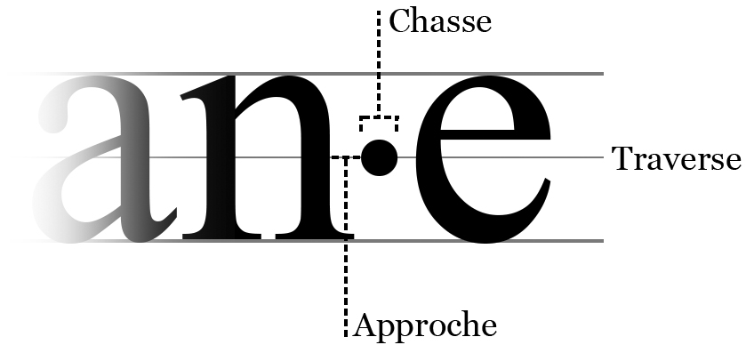

• Parmi les quatre séparateurs · (point médian), . (point), • (puce) et - (tiret), il est recommandé d'utiliser le point médian.
S'il est actuellement recommandé par le Haut Conseil à l'Égalité Femme-Homme, c'est qu'il présente plusieurs intérêts :
→ Ce caractère n'est pas précédemment utilisé dans l'orthographe française. Sa seule fonction sera donc de marquer l'inclusivité et il ne pourra être confondu.
→ Contrairement aux autres séparateurs, le point médian se démarque par une typographie intéressante : il à l'avantage d'avoir une approche et une chasse faible, en plus d'être positionné au niveau de la traverse. Il ne créé donc pas une rupture visuelle ou esthétique particulièrement marquée dans le mot. Il se fait discret tout en s'employant bien à lier le genre masculin et féminin.

• Il n'y a jamais d'espace avant et après un point médian.
Exemple : artisan · e → artisan·e
• Le s du pluriel, quand il est présent, devrait être séparé du reste du mot par un point médian,
SAUF lorsque le mot à un masculin pluriel en -x et un féminin pluriel en -s.
Exemples :
artisan·es (toléré) → artisan·e·s (recommandé)
faux·ausse·s → faux·ausses
• Lorsque le masculin possède déjà un s au singulier, le s est déplacé à la fin du mot au pluriel.
Exemple : tiers·ce·s ou tiers·ces (tolérés) → tier·ce·s (recommandé)
• Attention, les graphies suivantes ne seront absolument pas prises en compte par LIPT et sont généralement à proscrire :
artisan(e)s artisan/e/s artisan·e(s)
• La graphie artisanEs, parfois utilisée pour faire emphase sur le féminin, sera oralisée « artisanes » [aʁ.ti.zan] donc ignorera le genre masculin.
• Pour ne pas alourdir le texte oralisé, il est préconisé de ne pas abuser des mots inclusifs fusionnés et de favoriser des tournures de phrases plus neutres. Pour plus d'information, consulter le guide du Haut Conseil à l’Égalité Femme Homme : http://bit.ly/2fejwZ7
Pour voir